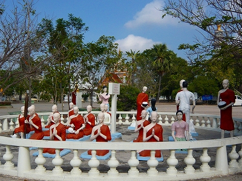

さてさて本格的に修行の開始である。
向かった先はバンコクより100キロほど北西に位置するスパンブリ県。
スパンブリといえば地獄マニアには御馴染みのワットパイロンウアがある。
今回はスパンブリ中心部を目指していたのだが、地獄愛好家としては素通り厳禁の寺なので近況チェックということで再訪することにした。
ワットパイロンウアはタイの地方寺院としてはかなり大規模で、広大な敷地には50メートルはあろうかという大仏や巨大な堂宇、池、墓地、売店などが点在している。駐車場も迷子になりそうなほど広い。
そんな巨大寺院の一画に地獄があるのだが、その前に駐車場付近のコンクリ像軍団にご挨拶をしておこう。
あ、6年前行った以前の様子と比べながらご覧になるとより重層的に楽しめるはず。
以前はひとりの坊さんが愚民共にフルボッコにされていたサークル。

今はお坊さんだらけになってました。仏教が暗愚な世界を改革した、ということなのかな。
前門のワニ、黄門の虎。
真ん中のおっさんが妙にくねっとしているのが気になる。
ワットパイ名物、ウンチの像。
なぜわざわざコレをコンクリ像にしたためるのか、意味が判らないのだが面白いから良しとしましょう。
ペンキの塗り替えがなされ、以前にも増してウンチがビビッドになったのは良いことなのか悪いことなのか…
で、いよいよお待ちかね、地獄エリアである。
相も変わらず地獄のファンキーパーティーが盛大に繰り広げられている。
地獄エリアも塗り替えされていて以前よりも良好な状態にあるようで少しほっとした。
って↓こんなですけどね。
言語を絶する苦痛の表現として目玉が飛び出す、という表現手法がよく使われている。

この、目玉が飛び出るかどうかはタイの立体コンクリ地業界の表現手段においてひとつの分水嶺だと思う。
目玉が飛び出さない地獄は、苦痛の表現として痛そうな表情をさせる。逆に言えば表情とか作れない技術的にアレな人が作る場合に目玉ぴゅーが発生しやすい、と考えられる。
なので目玉ぴゅーがある地獄は比較的お笑い要素が大きい地獄である、というのが私の経験上の結論だ。
そもそもタイのお寺にあるこの手のコンクリ像は信徒や近所の人が作っているものでプロの仕事ではない場合が多い。
従ってベースは一緒でもお寺によってそのスキルの差が激しい。
そこがタイの地獄の面白いところであり奥深いところなのだ。
ちなみに↑の人の全身はこんな↓。
同じように不必要なまでに舌が飛び出しているのも高ポイント。

首の後ろにガッチリ円盤ノコが食い込んじゃってます。
↑これが以前フィギアとしてネット上で売られてたのにはビックリした。
こんな場所に似つかわしくない美男美女（風）のカップル。
「ねえ、カンチぃお腹すいたわぁ」
「よし、鍋でも食べようか、リカ」
ハイ、よろこんでぇ～！
具材の調達。
これは鮮度にやや難アリ。
これも痛んでるなあ。
お、これは新鮮で豊富な食材だ。
さあ、熱々のスープをたんと召し上がれ。 |
||
| あまりにも美味過ぎて全身サブイボ。 |
こちらは塗りたての亡者さんたち。血飛沫のドリッピングに作り手の勢いを感じる。つかどじょう豆腐？
地獄コーナーの一画には巨大で不気味な面が掲げられ、その前で坊さんがダブサウンド説法を繰り広げていた。
その説法を聞いているのかいないのか、物乞いさん。
タイ地獄界のモニュメント、巨大な男女像。
10メートルはあろうかという立派なガイコツの男女像。
どちらも以前より綺麗になってました。
特に女性の斑点が念入りに描き込まれていて草間弥生女史の作品みたいになっちゃってます。
男女共に局部が思いっきり露出しているのだが、なぜか男女とも半分だけそぎ落とされているような状態。
医学標本みたいだけど意味が判らん。
園内、もとい境内のあちこちに地獄で災難にあった亡者が点在して様々な物語を噤んでいる。

リアルに手がとれちゃった人とかマジ疲れきってる人とか。
チョットこの辺はキュートな感じですね。
そして巨大男女像と共に地獄のアイコン、トゲトゲの木。
浮気した男女が血まみれになって登っていくのである。
遠くからその男女を仕留めようとする輩もいるから要注意だ。
地獄の様子はこんな↓です。
さて、地獄エリアも観たし軽く大仏さんに挨拶して行こうか。
巨大な大仏の背後には普通の大仏さんがずらりと並んでいる。
普通の大仏といっても他所に行けば充分ソロで活躍できるほどの大きさ。
その一番後ろには金の立像が。
アレ？？？？？
この後ろには巨大な寝釈迦が建設中だったが…
近づいてみたものの完全に更地になってました。
工事止めちゃったんだ…
片隅には仏様を弓で射ようとする輩がいたりして油断ならない。
以前来たときよりも地獄は若干バージョンアップしたが巨大寝釈迦が消滅してしまったのは残念でならない。
次の修行へＧＯ！
泰国珍寺修行 南へ
珍寺大道場 HOME